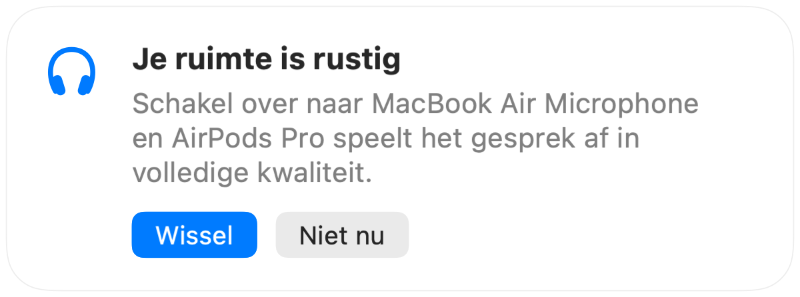

Waarom AirPods slechter klinken tijdens gesprekken op een Mac
Neem deel aan een gesprek met AirPods en het geluid klinkt ineens dof en blikkerig. Het is geen fout. Zodra een app de microfoon van de AirPods gebruikt, schakelt Bluetooth de AirPods naar een gespreksmodus die alles in veel lagere kwaliteit afspeelt.
De oplossing is om via de microfoon van je Mac te praten en de AirPods alleen geluid te laten afspelen. In een rustige ruimte klinkt de microfoon van je Mac net zo goed en hoor je het gesprek weer in volledige kwaliteit. Muffle merkt wanneer je ruimte rustig is en stelt de wissel voor.
Behoud volledige kwaliteit in gesprekken
- 1
Installeer Muffle en laat 'Stel de beste microfoon voor de ruimte voor' aanstaan.
- 2
Neem zoals gewoonlijk deel aan je gesprek met AirPods.
- 3
Wanneer Muffle meldt dat je ruimte rustig is, klik je op 'Wissel'.
- 4
Wordt het later luid, dan stelt Muffle de microfoon van de AirPods weer voor.

- Het overschakelen werkt wanneer je gespreks-app de standaardmicrofoon van het systeem gebruikt. Kies in Google Meet, Zoom en Teams voor de standaardoptie of gelijk aan het systeem.
- Blijf dicht bij je Mac terwijl je de microfoon gebruikt. Muffle stelt dit alleen voor wanneer je duidelijk te horen bent.
Veelgestelde vragen
Waarom klinken AirPods slecht tijdens Mac-gesprekken?
Bluetooth kan niet tegelijkertijd stereogeluid in hoge kwaliteit en je stem versturen. Daarom schakelen AirPods over naar de gespreksmodus zolang hun microfoon in gebruik is.
Schakelt Muffle vanzelf over tussen microfoons?
Nee. Muffle stelt alleen de betere microfoon voor. Er verandert niets totdat je op 'Wissel' klikt.